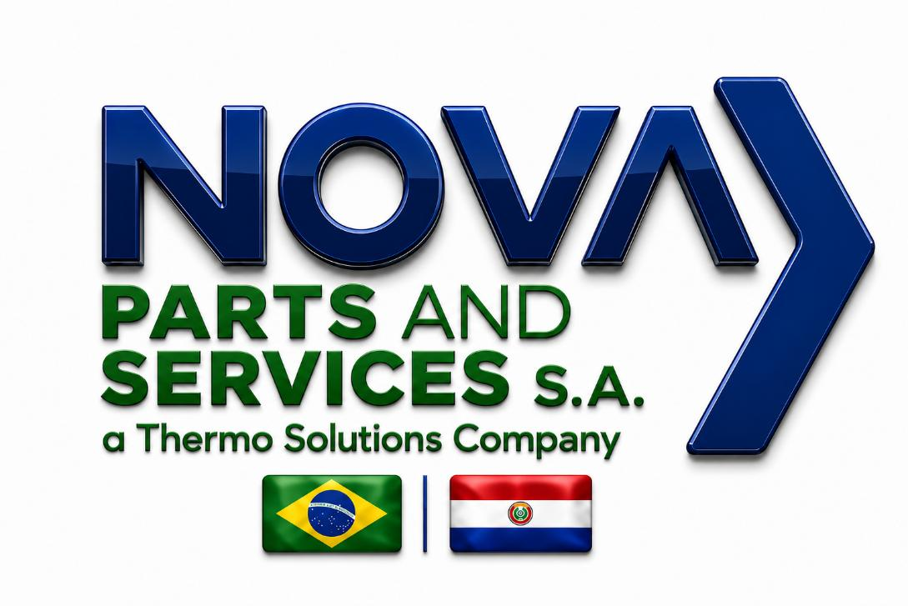
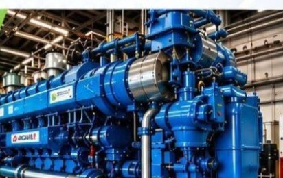
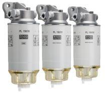
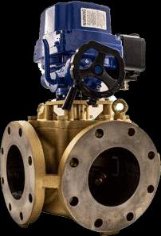
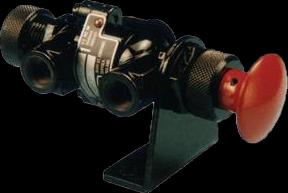
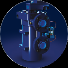
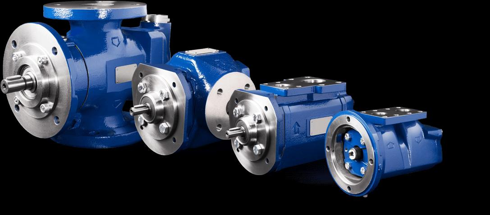
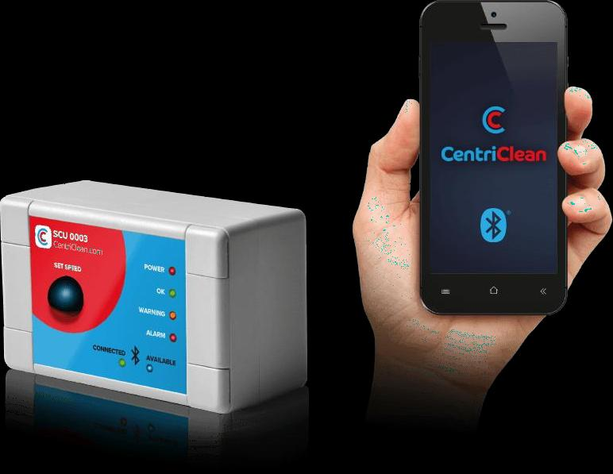
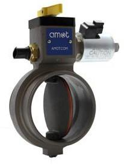
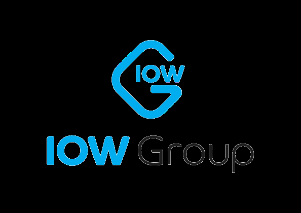

01 / SERVICIO
⚙
Mantenimiento preventivo
Inspecciones programadas, cambios de filtros, lubricación y ajustes para ayudar a preservar el rendimiento de los equipos.
Consultar servicio ↗
Repuestos, mantenimiento y soluciones especializadas para motores marinos e industriales de media y alta potencia.
Acompañamos a empresas que necesitan mantener sus equipos en funcionamiento, con atención técnica y soluciones de fabricantes reconocidos.

Soluciones técnicas enfocadas en confiabilidad, rendimiento y continuidad operativa. Analizamos cada necesidad para orientar la alternativa adecuada.
Inspecciones programadas, cambios de filtros, lubricación y ajustes para ayudar a preservar el rendimiento de los equipos.
Consultar servicio ↗Reparación y sustitución de componentes, rectificación de cilindros, válvulas y recuperación de culatas.
Consultar servicio ↗Desmontaje, limpieza, inspección técnica y montaje, según las condiciones y especificaciones del equipo.
Consultar servicio ↗Atención de sistemas de combustible, enfriamiento, escape y turbinas.
Consultar servicio ↗Pruebas de rendimiento, análisis de vibraciones y diagnóstico computarizado.
Consultar servicio ↗Asesoramiento técnico, capacitación y acompañamiento para optimizar la operación.
Consultar servicio ↗¿Necesita una solución específica? Compártanos la marca, el modelo del motor o el componente requerido. Nuestro equipo podrá orientarlo sobre la disponibilidad y el soporte correspondiente.
Hablar con un asesor ↗Trabajamos con distintas líneas de productos para motores, sistemas de control, filtración y equipos industriales. Consulte por marca, modelo y aplicación.

Soluciones de filtración para aire, aceite, combustible, agua y fluidos hidráulicos.
Consultar disponibilidad ↗
Válvulas termostáticas y soluciones de control para sistemas de enfriamiento.
Consultar disponibilidad ↗
Soluciones de corte de aire y protección contra condiciones de sobrevelocidad.
Consultar disponibilidad ↗
Equipos para el tratamiento y la limpieza continua del aceite lubricante.
Consultar disponibilidad ↗
Alternativas con sello mecánico o magnético para diferentes aplicaciones.
Consultar disponibilidad ↗
Monitoreo de velocidad y horas de funcionamiento para equipos de separación.
Consultar disponibilidad ↗
Componentes para control, protección y monitoreo de motores y sistemas industriales.
Consultar disponibilidad ↗Configuraciones que integran filtración, centrífuga y bomba de retrolavado.
Consultar disponibilidad ↗Las imágenes ilustran líneas de productos incluidas en el material institucional. La disponibilidad, configuración y compatibilidad se confirman según marca, modelo y aplicación.
Alianzas comerciales y representaciones que amplían nuestra capacidad de suministro y soporte para aplicaciones navales e industriales.
Consultar por una marca ↗
Las marcas y logotipos pertenecen a sus respectivos titulares. Consulte con Nova Parts el alcance de representación y disponibilidad para cada línea en Paraguay.
Nova Parts and Services S.A. forma parte de una expansión estratégica vinculada a Thermo Solutions Company de Brasil. Reúne experiencia en el sector naval, offshore y de generación de energía, con foco en el suministro de repuestos y soluciones técnicas.
Trabajamos para ofrecer atención ágil, precisión técnica y acompañamiento comercial, conectando las necesidades de cada operación con productos y servicios especializados.
Envíenos los datos del equipo, marca, modelo o componente que necesita. Nuestro equipo comercial podrá orientarlo sobre el próximo paso.
Barrio Santa Librada, Mariano Roque Alonso, Paraguay